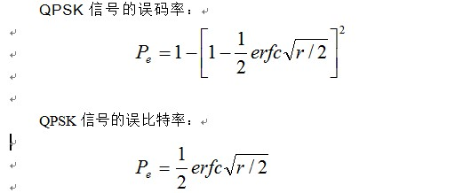

信噪比(S/N)是指传输信号的平均功率与加性噪声的平均功率之比。
载噪比(C/N)指已经调制的信号的平均功率与加性噪声的平均功率之比。
信噪比与载噪比区别在于，载噪比中已调信号的功率包括了传输信号的功率和调制载波的功率，而信噪比中仅包括传输信号的功率，两者之间相差一个载波功率。当然载波功率与传输信号功率相比通常都是很小的，因而载噪比与信噪比在数值上十分接近。
对抑制载波的调制方式来说，两者的值相等。信噪比和载噪比可以在接收端直接通过测量得到。
在调制传输系统中，一般采用载噪比指标；而在基带传输系统中，一般采用信噪比指标。
实际数字通信系统的可靠性性能常以一个载噪比对误码率的关系曲线来描述的，曲线的横坐标为 C/N，纵坐标为 BER(误码率)。
Eb的单位是J,定义是接收端的平均比特能量。
N0的单位是W/Hz(J)，也是在接收端定义的平均噪声功率谱密度。
Eb/N0实际上就是一种信噪比，因为通常讲的 SNR是信号和噪声功率的比值，是单位时间内的信号和噪声能量的比值，但是在通信中计算单位时间内的SNR是相对笼统的，Eb/NO取单位比特码的SNR 就比较科学，和一般的信噪比一样，用它来表征无线信道的质量是理所当然的。
S和N的单位是W。具体的，比特传输速率为Rb(比特/秒)，带宽W（赫兹）
S/N=Eb*Rb/N0*W=(Eb/N0)*(Rb/W)
Rb/W就是频谱效率，这个值是与编码、调制方式有关。比如1/2的编码，16QAM来说Rb/W=1/2*4=2；再比如对于1/2的编码，BPSK来说，Rb/W=1/2*1=1/2；再比如对于GPS L1频点直扩信号，Rb/W=1/(20*1023)*1。
所以SNR与Eb/N0就是线性关系，仿真时可以将Eb/N0与S/N统一看待。
对于QPSK，误码率误比特率的公式如下：
